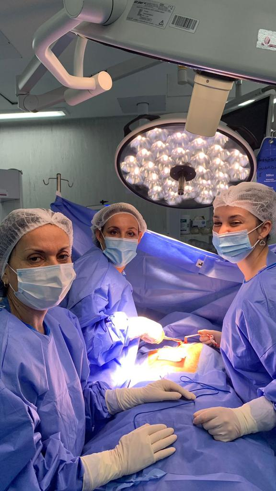

Nuestros Servicios
Cirugía Plástica
Procedimientos para mejorar la armonía facial
y corporal.
Medicina Estética

Tratamientos para realzar la belleza
individual.
Procedimientos para mejorar la armonía facial
y corporal.
Tratamientos para realzar la belleza
individual.